library(knitr)We will look at:
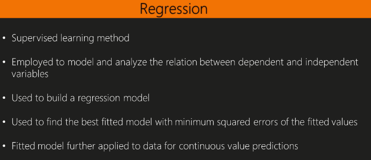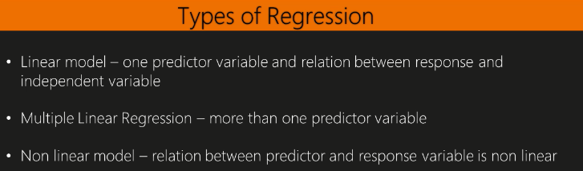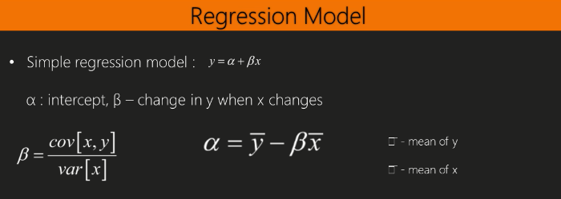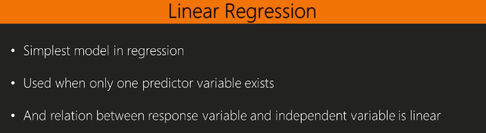
library(car)
# Load data
data(Quartet)
# Structure of the data
str(Quartet)## 'data.frame': 11 obs. of 6 variables:
## $ x : int 10 8 13 9 11 14 6 4 12 7 ...
## $ y1: num 8.04 6.95 7.58 8.81 8.33 ...
## $ y2: num 9.14 8.14 8.74 8.77 9.26 8.1 6.13 3.1 9.13 7.26 ...
## $ y3: num 7.46 6.77 12.74 7.11 7.81 ...
## $ x4: int 8 8 8 8 8 8 8 19 8 8 ...
## $ y4: num 6.58 5.76 7.71 8.84 8.47 7.04 5.25 12.5 5.56 7.91 ...# Simple plot to get an idea
plot(Quartet$x, Quartet$y1)
# Creating linear model
lmfit = lm(y1~x, Quartet)
lmfit##
## Call:
## lm(formula = y1 ~ x, data = Quartet)
##
## Coefficients:
## (Intercept) x
## 3.0001 0.5001# Plotting again with the fitted line
plot(Quartet$x, Quartet$y1)
abline(lmfit, col="red")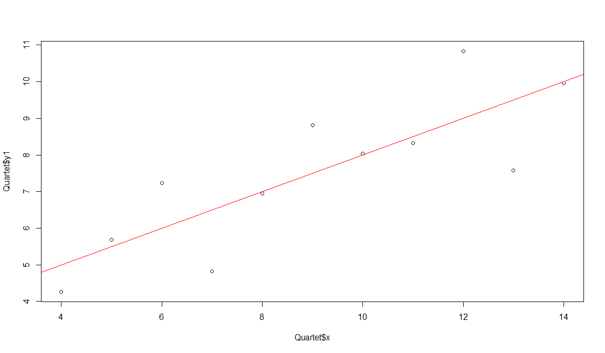
# Provides multiple interesting information
summary(lmfit)##
## Call:
## lm(formula = y1 ~ x, data = Quartet)
##
## Residuals:
## Min 1Q Median 3Q Max
## -1.92127 -0.45577 -0.04136 0.70941 1.83882
##
## Coefficients:
## Estimate Std. Error t value Pr(>|t|)
## (Intercept) 3.0001 1.1247 2.667 0.02573 *
## x 0.5001 0.1179 4.241 0.00217 **
## ---
## Signif. codes: 0 '***' 0.001 '**' 0.01 '*' 0.05 '.' 0.1 ' ' 1
##
## Residual standard error: 1.237 on 9 degrees of freedom
## Multiple R-squared: 0.6665, Adjusted R-squared: 0.6295
## F-statistic: 17.99 on 1 and 9 DF, p-value: 0.00217# Get the coefficients
coefficients(lmfit) ## (Intercept) x
## 3.0000909 0.5000909# Get the confidence intervals
confint(lmfit, level=0.95) ## 2.5 % 97.5 %
## (Intercept) 0.4557369 5.5444449
## x 0.2333701 0.7668117# Extracts the predicted values for each observation
fitted(lmfit) ## 1 2 3 4 5 6 7 8 9 10 11
## 8.001000 7.000818 9.501273 7.500909 8.501091 10.001364 6.000636 5.000455 9.001182 6.500727 5.500545# Extracts the errors made for each observation
residuals(lmfit) ## 1 2 3 4 5 6 7 8 9 10 11
## 0.03900000 -0.05081818 -1.92127273 1.30909091 -0.17109091 -0.04136364 1.23936364 -0.74045455 1.83881818 -1.68072727 0.17945455# ANOVA test
anova(lmfit) ## Analysis of Variance Table
##
## Response: y1
## Df Sum Sq Mean Sq F value Pr(>F)
## x 1 27.510 27.5100 17.99 0.00217 **
## Residuals 9 13.763 1.5292
## ---
## Signif. codes: 0 '***' 0.001 '**' 0.01 '*' 0.05 '.' 0.1 ' ' 1# Variance-covariance matrix
vcov(lmfit) ## (Intercept) x
## (Intercept) 1.2650553 -0.12511536
## x -0.1251154 0.01390171# Quality of regression fits
influence(lmfit) ## $hat
## 1 2 3 4 5 6 7 8 9 10 11
## 0.10000000 0.10000000 0.23636364 0.09090909 0.12727273 0.31818182 0.17272727 0.31818182 0.17272727 0.12727273 0.23636364
##
## $coefficients
## (Intercept) x
## 1 0.0003939394 3.939394e-04
## 2 -0.0097529844 5.133150e-04
## 3 0.5946796537 -9.148918e-02
## 4 0.1309090909 -1.323195e-18
## 5 0.0142575758 -3.564394e-03
## 6 0.0193030303 -2.757576e-03
## 7 0.5039170829 -4.085814e-02
## 8 -0.5430000000 4.936364e-02
## 9 -0.3435154845 6.062038e-02
## 10 -0.4902121212 3.501515e-02
## 11 0.0982727273 -8.545455e-03
##
## $sigma
## 1 2 3 4 5 6 7 8 9 10 11
## 1.311535 1.311479 1.056460 1.218483 1.310017 1.311496 1.219936 1.272721 1.099742 1.147055 1.309605
##
## $wt.res
## 1 2 3 4 5 6 7 8 9 10 11
## 0.03900000 -0.05081818 -1.92127273 1.30909091 -0.17109091 -0.04136364 1.23936364 -0.74045455 1.83881818 -1.68072727 0.17945455# Linear model
lmfit = lm(y1~x, Quartet)
# Create new data
newdata = data.frame(x = c(3,6,15))
# Prediction with confidence intervals
predict(lmfit, newdata, interval="confidence", level=0.95)## fit lwr upr
## 1 4.500364 2.691375 6.309352
## 2 6.000636 4.838027 7.163245
## 3 10.501455 8.692466 12.310443#
predict(lmfit, newdata, interval="predict")## fit lwr upr
## 1 4.500364 1.169022 7.831705
## 2 6.000636 2.971271 9.030002
## 3 10.501455 7.170113 13.832796par(mfrow=c(2,2))
plot(lmfit)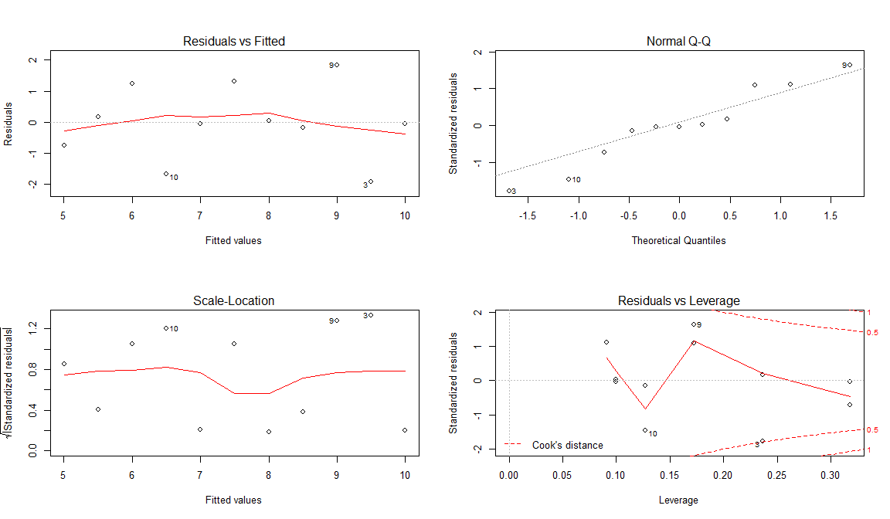
# To find outliers
plot(cooks.distance(lmfit))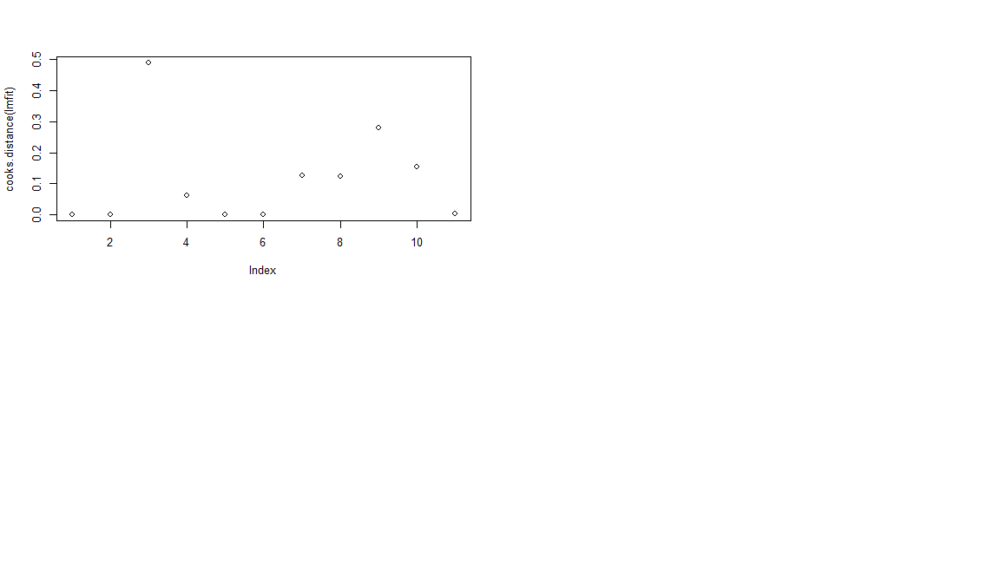
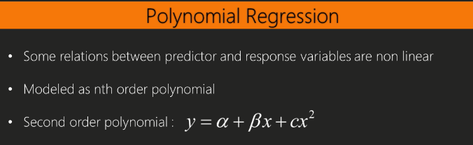
# Clearly non-linea relationship
plot(Quartet$x, Quartet$y2)
# Add a non-linear input variable using the poly function
lmfit = lm(Quartet$y2~poly(Quartet$x,2))
summary(lmfit)##
## Call:
## lm(formula = Quartet$y2 ~ poly(Quartet$x, 2))
##
## Residuals:
## Min 1Q Median 3Q Max
## -0.0013287 -0.0011888 -0.0006294 0.0008741 0.0023776
##
## Coefficients:
## Estimate Std. Error t value Pr(>|t|)
## (Intercept) 7.5009091 0.0005043 14875 <2e-16 ***
## poly(Quartet$x, 2)1 5.2440442 0.0016725 3135 <2e-16 ***
## poly(Quartet$x, 2)2 -3.7116396 0.0016725 -2219 <2e-16 ***
## ---
## Signif. codes: 0 '***' 0.001 '**' 0.01 '*' 0.05 '.' 0.1 ' ' 1
##
## Residual standard error: 0.001672 on 8 degrees of freedom
## Multiple R-squared: 1, Adjusted R-squared: 1
## F-statistic: 7.378e+06 on 2 and 8 DF, p-value: < 2.2e-16# Plotting
plot(Quartet$x, Quartet$y2)
lines(sort(Quartet$x), lmfit$fit[order(Quartet$x)], col = "red")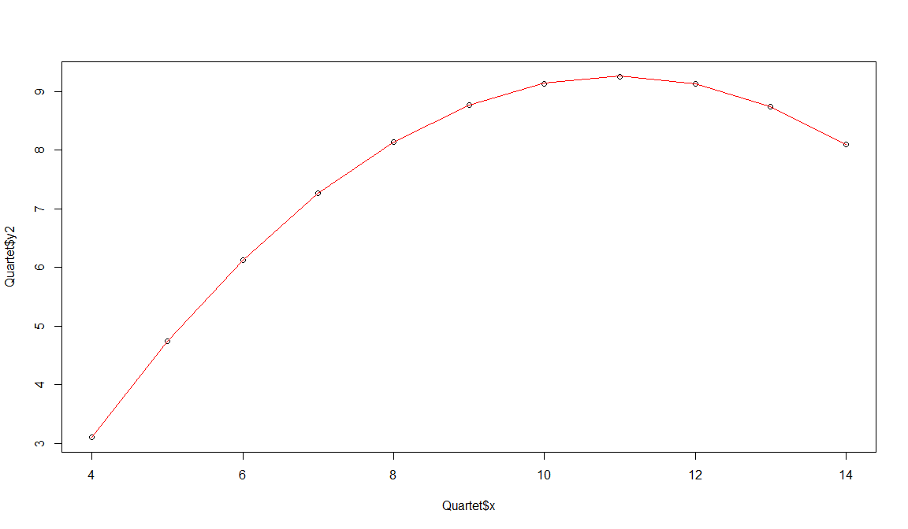
We will check for outliers and remove them.
# Clearly outlier
plot(Quartet$x, Quartet$y3)
# Creating a normal linear model -> due to the outlier, the line is pushed up!
lmfit_normal = lm(Quartet$y3~Quartet$x)
plot(Quartet$x, Quartet$y3)
abline(lmfit_normal, col="red")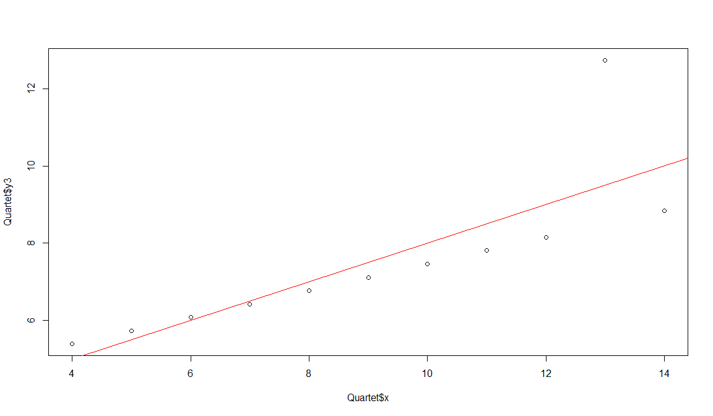
# Creating a robust linear model -> rlm can capture outliers and exlcude them from the calculation of the model
library(MASS)
lmfit = rlm(Quartet$y3~Quartet$x)
plot(Quartet$x, Quartet$y3)
abline(lmfit, col="red")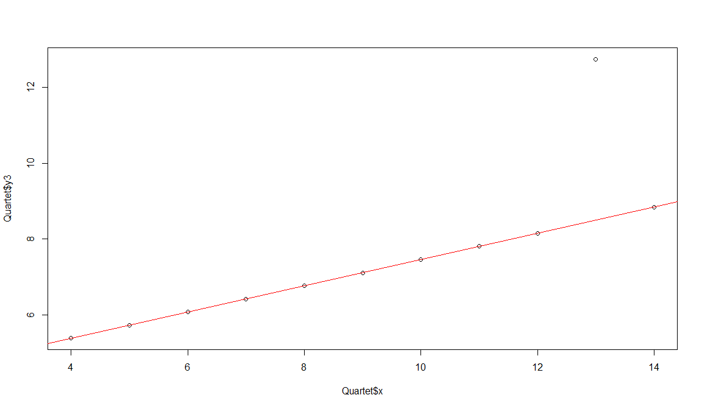
We start with a simple model and start changing it to get better predictions
library(car)
str(SLID)## 'data.frame': 7425 obs. of 5 variables:
## $ wages : num 10.6 11 NA 17.8 NA ...
## $ education: num 15 13.2 16 14 8 16 12 14.5 15 10 ...
## $ age : int 40 19 49 46 71 50 70 42 31 56 ...
## $ sex : Factor w/ 2 levels "Female","Male": 2 2 2 2 2 1 1 1 2 1 ...
## $ language : Factor w/ 3 levels "English","French",..: 1 1 3 3 1 1 1 1 1 1 ...# PLOTTING
par(mfrow=c(2,2))
# from first plot, there is apparently no correlation between wages and languages
plot(SLID$wages ~ SLID$language)
# age does seems to have a slight positive correlation
plot(SLID$wages ~ SLID$age)
# education clearly shows a positive correlation with wages
plot(SLID$wages ~ SLID$education)
# as per sex, this plot shows higher wages for men
plot(SLID$wages ~ SLID$sex)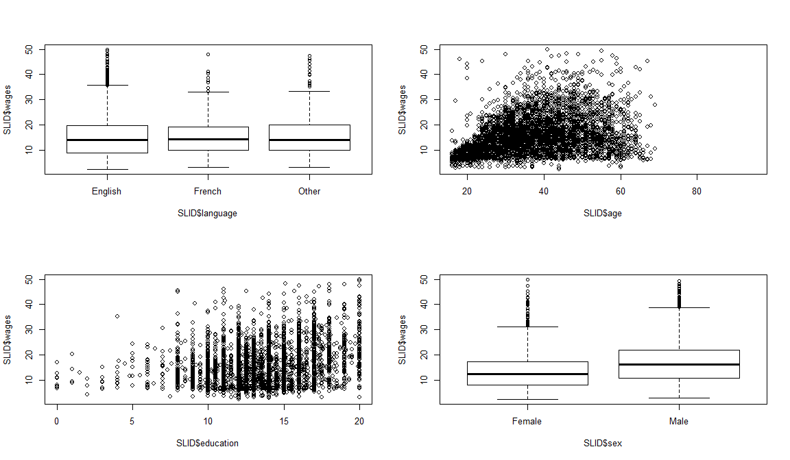
# Input all data (except obviously for wages which is the response var!)
lmfit = lm(wages ~ ., data = SLID)
## Clearly, as we thought before, languages are not correlated with wages, therefore, it appears to be a non-significant variables with a p-value of 0.05. We should simplify this model by removing the variable.
summary(lmfit)##
## Call:
## lm(formula = wages ~ ., data = SLID)
##
## Residuals:
## Min 1Q Median 3Q Max
## -26.062 -4.347 -0.797 3.237 35.908
##
## Coefficients:
## Estimate Std. Error t value Pr(>|t|)
## (Intercept) -7.888779 0.612263 -12.885 <2e-16 ***
## education 0.916614 0.034762 26.368 <2e-16 ***
## age 0.255137 0.008714 29.278 <2e-16 ***
## sexMale 3.455411 0.209195 16.518 <2e-16 ***
## languageFrench -0.015223 0.426732 -0.036 0.972
## languageOther 0.142605 0.325058 0.439 0.661
## ---
## Signif. codes: 0 '***' 0.001 '**' 0.01 '*' 0.05 '.' 0.1 ' ' 1
##
## Residual standard error: 6.6 on 3981 degrees of freedom
## (3438 observations deleted due to missingness)
## Multiple R-squared: 0.2973, Adjusted R-squared: 0.2964
## F-statistic: 336.8 on 5 and 3981 DF, p-value: < 2.2e-16# Removing the language variable
lmfit = lm(wages ~ age + sex + education, data = SLID)
summary(lmfit)##
## Call:
## lm(formula = wages ~ age + sex + education, data = SLID)
##
## Residuals:
## Min 1Q Median 3Q Max
## -26.111 -4.328 -0.792 3.243 35.892
##
## Coefficients:
## Estimate Std. Error t value Pr(>|t|)
## (Intercept) -7.905243 0.607771 -13.01 <2e-16 ***
## age 0.255101 0.008634 29.55 <2e-16 ***
## sexMale 3.465251 0.208494 16.62 <2e-16 ***
## education 0.918735 0.034514 26.62 <2e-16 ***
## ---
## Signif. codes: 0 '***' 0.001 '**' 0.01 '*' 0.05 '.' 0.1 ' ' 1
##
## Residual standard error: 6.602 on 4010 degrees of freedom
## (3411 observations deleted due to missingness)
## Multiple R-squared: 0.2972, Adjusted R-squared: 0.2967
## F-statistic: 565.3 on 3 and 4010 DF, p-value: < 2.2e-16# From the plots we see that the residuals of smaller fitted values are biased towards the fitted model. Can that be because of the distribution of wages?
par(mfrow=c(2,2))
plot(lmfit)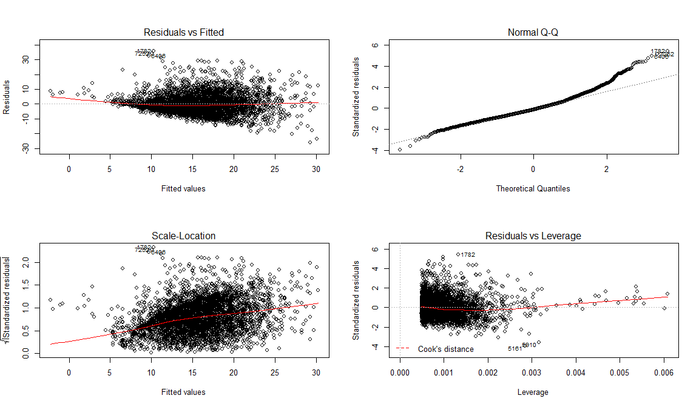
# Distribution of wages -> it doesnt seem a very normally distributed plot
plot(density(SLID$wages, na.rm = TRUE))
# Taking the log -> a bit better...
plot(density(log(SLID$wages), na.rm = TRUE))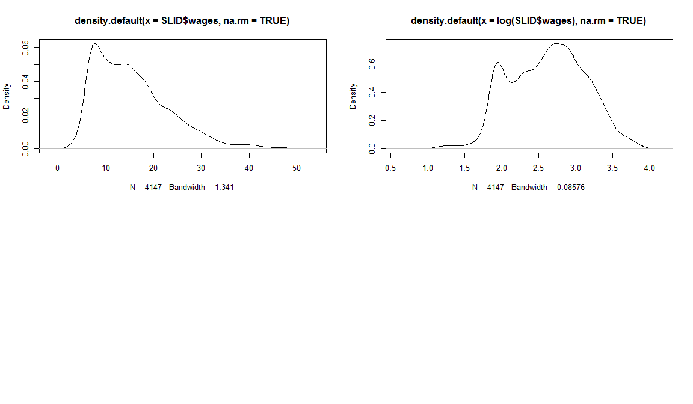
# Applying log transformation --> much better both R-squared and the plots
lmfit = lm(log(wages) ~ age + sex + education, data = SLID)
summary(lmfit)##
## Call:
## lm(formula = log(wages) ~ age + sex + education, data = SLID)
##
## Residuals:
## Min 1Q Median 3Q Max
## -2.36252 -0.27716 0.01428 0.28625 1.56588
##
## Coefficients:
## Estimate Std. Error t value Pr(>|t|)
## (Intercept) 1.1168632 0.0385480 28.97 <2e-16 ***
## age 0.0176334 0.0005476 32.20 <2e-16 ***
## sexMale 0.2244032 0.0132238 16.97 <2e-16 ***
## education 0.0552139 0.0021891 25.22 <2e-16 ***
## ---
## Signif. codes: 0 '***' 0.001 '**' 0.01 '*' 0.05 '.' 0.1 ' ' 1
##
## Residual standard error: 0.4187 on 4010 degrees of freedom
## (3411 observations deleted due to missingness)
## Multiple R-squared: 0.3094, Adjusted R-squared: 0.3089
## F-statistic: 598.9 on 3 and 4010 DF, p-value: < 2.2e-16par(mfrow=c(2,2))
plot(lmfit)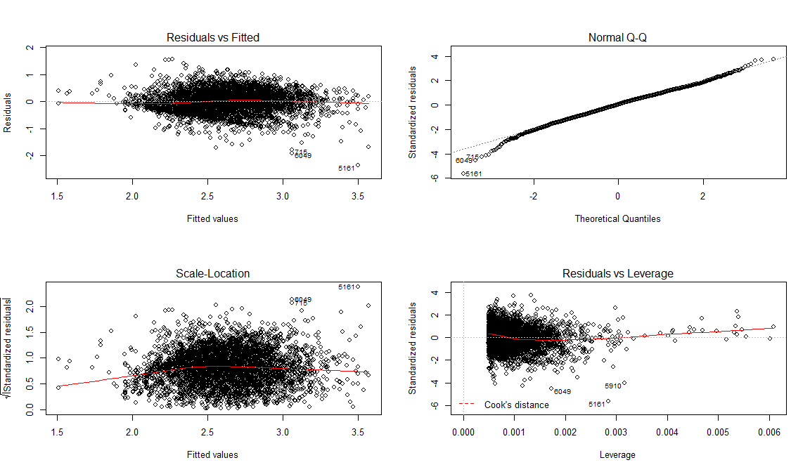
Multicolinearity takes place when a predictor is highly correlated with others. If multicolinearity exists in the models, you might see some of the variables have a high r-squared value but at the same time, they are statistically insignificant variables. To detect multicolinearity, we can calculate the variance inflation, and if the values are above 2, we can say thay those factors are colinear. Once you have found multicolinearity, that means there is no need to have 2 very similar variables in the model, so either you remove 1 of them, or you apply PCA to group them.
vif(lmfit)## age sexMale education
## 1.011613 1.000834 1.012179Heteroscedasticity checks if the variance is unequal across observations.
library(lmtest)
# As p-value less than 0.05, reject H0 (homoscedasticity).
bptest(lmfit)##
## studentized Breusch-Pagan test
##
## data: lmfit
## BP = 29.031, df = 3, p-value = 2.206e-06library(rms)
olsfit = ols(log(wages) ~ age + sex + education, data= SLID, x=TRUE, y= TRUE)
robcov(olsfit)## Frequencies of Missing Values Due to Each Variable
## log(wages) age sex education
## 3278 0 0 249
##
## Linear Regression Model
##
## ols(formula = log(wages) ~ age + sex + education, data = SLID,
## x = TRUE, y = TRUE)
##
##
## Model Likelihood Discrimination
## Ratio Test Indexes
## Obs 4014 LR chi2 1486.08 R2 0.309
## sigma0.4187 d.f. 3 R2 adj 0.309
## d.f. 4010 Pr(> chi2) 0.0000 g 0.315
##
## Residuals
##
## Min 1Q Median 3Q Max
## -2.36252 -0.27716 0.01428 0.28625 1.56588
##
##
## Coef S.E. t Pr(>|t|)
## Intercept 1.1169 0.0387 28.90 <0.0001
## age 0.0176 0.0006 30.15 <0.0001
## sex=Male 0.2244 0.0132 16.96 <0.0001
## education 0.0552 0.0022 24.82 <0.0001
## Basically, a GLM is a generalization for linear models. For example, the previous linear models we built are part of the GLM family. To show this, below we fit a GLM with a gaussian link function or family and normal linear model. Both show the same results.
lmfit1 = glm(wages ~ age + sex + education, data = SLID,family=gaussian)
summary(lmfit1)##
## Call:
## glm(formula = wages ~ age + sex + education, family = gaussian,
## data = SLID)
##
## Deviance Residuals:
## Min 1Q Median 3Q Max
## -26.111 -4.328 -0.792 3.243 35.892
##
## Coefficients:
## Estimate Std. Error t value Pr(>|t|)
## (Intercept) -7.905243 0.607771 -13.01 <2e-16 ***
## age 0.255101 0.008634 29.55 <2e-16 ***
## sexMale 3.465251 0.208494 16.62 <2e-16 ***
## education 0.918735 0.034514 26.62 <2e-16 ***
## ---
## Signif. codes: 0 '***' 0.001 '**' 0.01 '*' 0.05 '.' 0.1 ' ' 1
##
## (Dispersion parameter for gaussian family taken to be 43.58492)
##
## Null deviance: 248686 on 4013 degrees of freedom
## Residual deviance: 174776 on 4010 degrees of freedom
## (3411 observations deleted due to missingness)
## AIC: 26549
##
## Number of Fisher Scoring iterations: 2lmfit2 = lm(wages ~ age + sex + education, data = SLID)
summary(lmfit2)##
## Call:
## lm(formula = wages ~ age + sex + education, data = SLID)
##
## Residuals:
## Min 1Q Median 3Q Max
## -26.111 -4.328 -0.792 3.243 35.892
##
## Coefficients:
## Estimate Std. Error t value Pr(>|t|)
## (Intercept) -7.905243 0.607771 -13.01 <2e-16 ***
## age 0.255101 0.008634 29.55 <2e-16 ***
## sexMale 3.465251 0.208494 16.62 <2e-16 ***
## education 0.918735 0.034514 26.62 <2e-16 ***
## ---
## Signif. codes: 0 '***' 0.001 '**' 0.01 '*' 0.05 '.' 0.1 ' ' 1
##
## Residual standard error: 6.602 on 4010 degrees of freedom
## (3411 observations deleted due to missingness)
## Multiple R-squared: 0.2972, Adjusted R-squared: 0.2967
## F-statistic: 565.3 on 3 and 4010 DF, p-value: < 2.2e-16Usig ANOVA to compare both models
# Anova shows that both models are very similar, as we have similar residual degrees of freedom
anova(lmfit1, lmfit2)## Analysis of Deviance Table
##
## Model: gaussian, link: identity
##
## Response: wages
##
## Terms added sequentially (first to last)
##
##
## Df Deviance Resid. Df Resid. Dev
## NULL 4013 248686
## age 1 31953 4012 216733
## sex 1 11074 4011 205659
## education 1 30883 4010 174776data(warpbreaks)
head(warpbreaks)## breaks wool tension
## 1 26 A L
## 2 30 A L
## 3 54 A L
## 4 25 A L
## 5 70 A L
## 6 52 A Lrs1 = glm(breaks ~ tension, data=warpbreaks, family="poisson")
summary(rs1)##
## Call:
## glm(formula = breaks ~ tension, family = "poisson", data = warpbreaks)
##
## Deviance Residuals:
## Min 1Q Median 3Q Max
## -4.2464 -1.6031 -0.5872 1.2813 4.9366
##
## Coefficients:
## Estimate Std. Error z value Pr(>|z|)
## (Intercept) 3.59426 0.03907 91.988 < 2e-16 ***
## tensionM -0.32132 0.06027 -5.332 9.73e-08 ***
## tensionH -0.51849 0.06396 -8.107 5.21e-16 ***
## ---
## Signif. codes: 0 '***' 0.001 '**' 0.01 '*' 0.05 '.' 0.1 ' ' 1
##
## (Dispersion parameter for poisson family taken to be 1)
##
## Null deviance: 297.37 on 53 degrees of freedom
## Residual deviance: 226.43 on 51 degrees of freedom
## AIC: 507.09
##
## Number of Fisher Scoring iterations: 4Good for a binary dependant variable
head(mtcars$vs)## [1] 0 0 1 1 0 1lm1 = glm(vs ~ hp+mpg+gear,data=mtcars, family=binomial)
summary(lm1)##
## Call:
## glm(formula = vs ~ hp + mpg + gear, family = binomial, data = mtcars)
##
## Deviance Residuals:
## Min 1Q Median 3Q Max
## -1.68166 -0.23743 -0.00945 0.30884 1.55688
##
## Coefficients:
## Estimate Std. Error z value Pr(>|z|)
## (Intercept) 11.95183 8.00322 1.493 0.1353
## hp -0.07322 0.03440 -2.129 0.0333 *
## mpg 0.16051 0.27538 0.583 0.5600
## gear -1.66526 1.76407 -0.944 0.3452
## ---
## Signif. codes: 0 '***' 0.001 '**' 0.01 '*' 0.05 '.' 0.1 ' ' 1
##
## (Dispersion parameter for binomial family taken to be 1)
##
## Null deviance: 43.860 on 31 degrees of freedom
## Residual deviance: 15.651 on 28 degrees of freedom
## AIC: 23.651
##
## Number of Fisher Scoring iterations: 7lm1 = glm(vs ~ hp+mpg+gear,data=mtcars,family=binomial(link="probit"))## Warning: glm.fit: fitted probabilities numerically 0 or 1 occurredsummary(lm1)##
## Call:
## glm(formula = vs ~ hp + mpg + gear, family = binomial(link = "probit"),
## data = mtcars)
##
## Deviance Residuals:
## Min 1Q Median 3Q Max
## -1.66320 -0.17820 -0.00014 0.26087 1.54319
##
## Coefficients:
## Estimate Std. Error z value Pr(>|z|)
## (Intercept) 7.34108 4.56895 1.607 0.1081
## hp -0.04456 0.01912 -2.331 0.0198 *
## mpg 0.09401 0.16360 0.575 0.5655
## gear -1.01178 1.00203 -1.010 0.3126
## ---
## Signif. codes: 0 '***' 0.001 '**' 0.01 '*' 0.05 '.' 0.1 ' ' 1
##
## (Dispersion parameter for binomial family taken to be 1)
##
## Null deviance: 43.860 on 31 degrees of freedom
## Residual deviance: 15.275 on 28 degrees of freedom
## AIC: 23.275
##
## Number of Fisher Scoring iterations: 9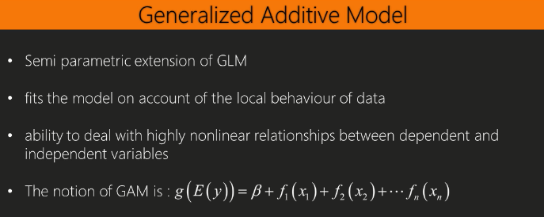
library(mgcv)
library(MASS)
attach(Boston)## The following objects are masked from Boston (pos = 3):
##
## age, black, chas, crim, dis, indus, lstat, medv, nox, ptratio, rad, rm, tax, zn## The following objects are masked from Boston (pos = 4):
##
## age, black, chas, crim, dis, indus, lstat, medv, nox, ptratio, rad, rm, tax, zn## The following objects are masked from Boston (pos = 5):
##
## age, black, chas, crim, dis, indus, lstat, medv, nox, ptratio, rad, rm, tax, zn## The following objects are masked from Boston (pos = 6):
##
## age, black, chas, crim, dis, indus, lstat, medv, nox, ptratio, rad, rm, tax, znstr(Boston)## 'data.frame': 506 obs. of 14 variables:
## $ crim : num 0.00632 0.02731 0.02729 0.03237 0.06905 ...
## $ zn : num 18 0 0 0 0 0 12.5 12.5 12.5 12.5 ...
## $ indus : num 2.31 7.07 7.07 2.18 2.18 2.18 7.87 7.87 7.87 7.87 ...
## $ chas : int 0 0 0 0 0 0 0 0 0 0 ...
## $ nox : num 0.538 0.469 0.469 0.458 0.458 0.458 0.524 0.524 0.524 0.524 ...
## $ rm : num 6.58 6.42 7.18 7 7.15 ...
## $ age : num 65.2 78.9 61.1 45.8 54.2 58.7 66.6 96.1 100 85.9 ...
## $ dis : num 4.09 4.97 4.97 6.06 6.06 ...
## $ rad : int 1 2 2 3 3 3 5 5 5 5 ...
## $ tax : num 296 242 242 222 222 222 311 311 311 311 ...
## $ ptratio: num 15.3 17.8 17.8 18.7 18.7 18.7 15.2 15.2 15.2 15.2 ...
## $ black : num 397 397 393 395 397 ...
## $ lstat : num 4.98 9.14 4.03 2.94 5.33 ...
## $ medv : num 24 21.6 34.7 33.4 36.2 28.7 22.9 27.1 16.5 18.9 ...plot(Boston$nox, Boston$dis)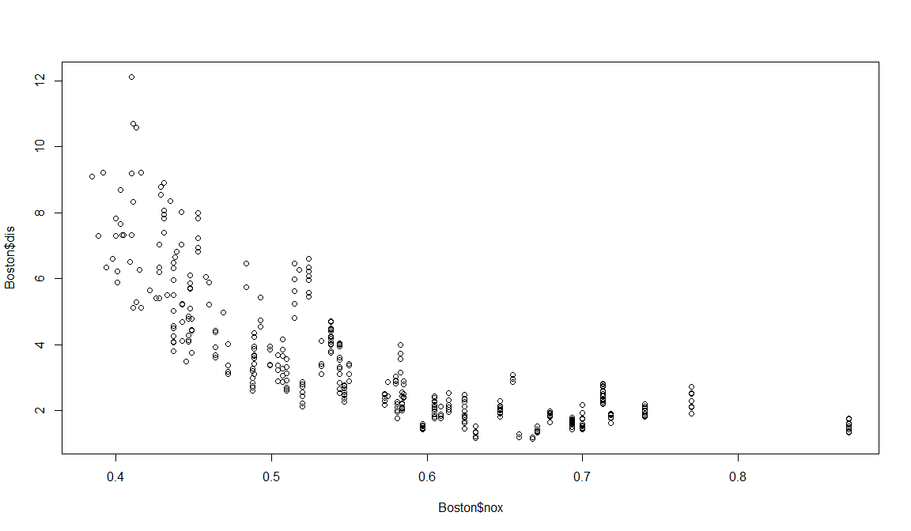
fit = gam(dis ~ s(nox))
summary(fit)##
## Family: gaussian
## Link function: identity
##
## Formula:
## dis ~ s(nox)
##
## Parametric coefficients:
## Estimate Std. Error t value Pr(>|t|)
## (Intercept) 3.79504 0.04507 84.21 <2e-16 ***
## ---
## Signif. codes: 0 '***' 0.001 '**' 0.01 '*' 0.05 '.' 0.1 ' ' 1
##
## Approximate significance of smooth terms:
## edf Ref.df F p-value
## s(nox) 8.434 8.893 189 <2e-16 ***
## ---
## Signif. codes: 0 '***' 0.001 '**' 0.01 '*' 0.05 '.' 0.1 ' ' 1
##
## R-sq.(adj) = 0.768 Deviance explained = 77.2%
## GCV = 1.0472 Scale est. = 1.0277 n = 506x = seq(0, 1, length = 500)
y = predict(fit, data.frame(nox = x))
## PLOT PREDICTIONS
plot(Boston$nox, Boston$dis)
lines(x, y, col = "red", lwd = 2)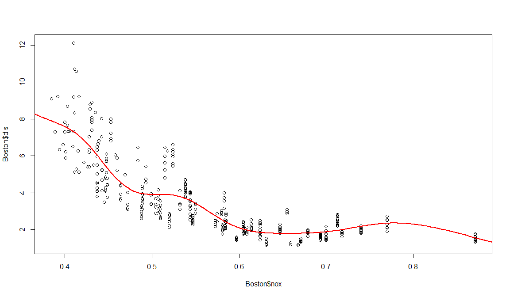
## PLOT FIT
plot(fit)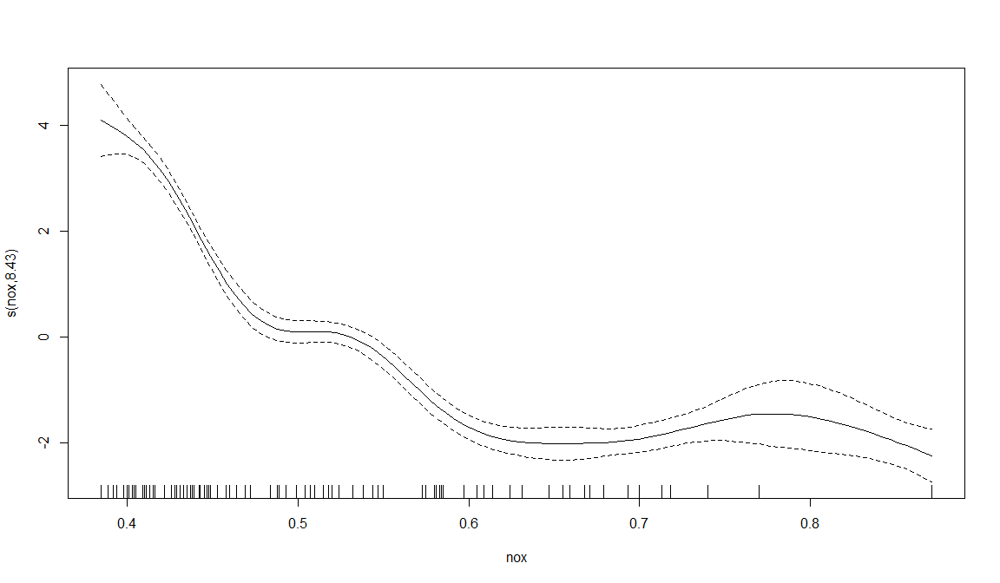
## EXTRA MODEL + VISUALIZE EXTRA INFO
fit2=gam(medv~crim+zn+crim:zn, data=Boston)
vis.gam(fit2)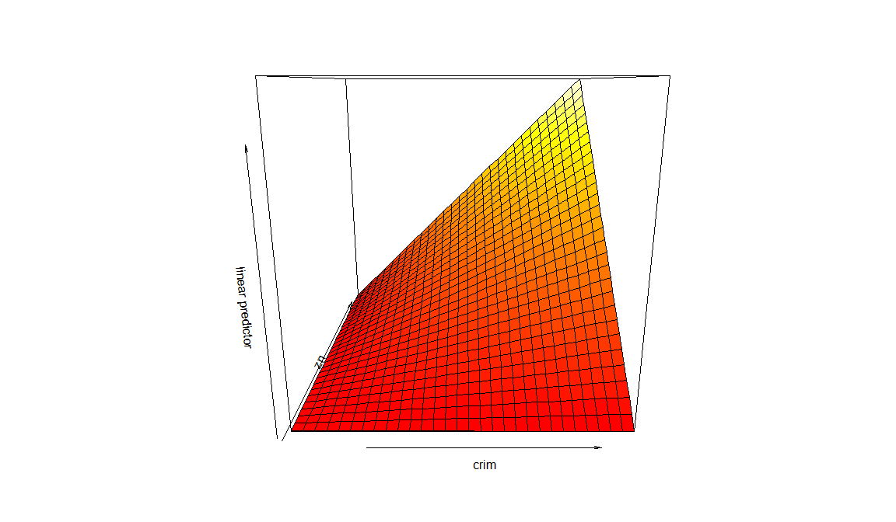
gam.check(fit)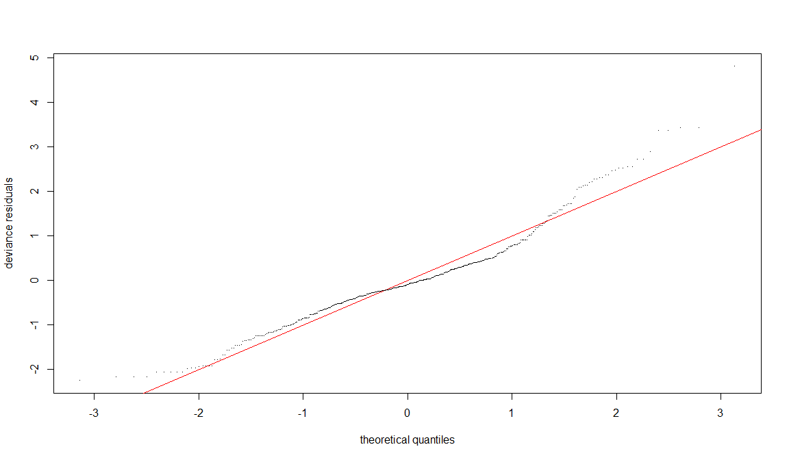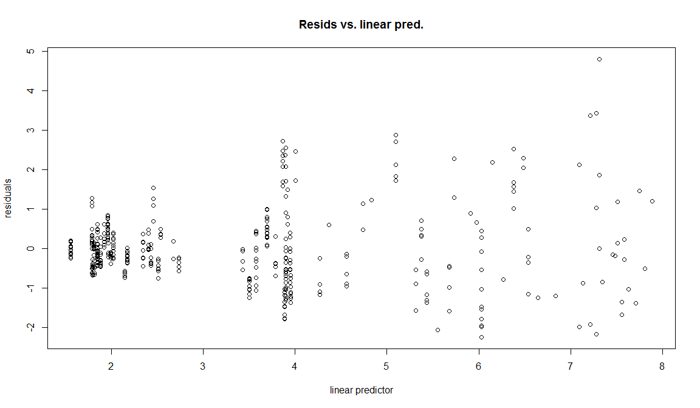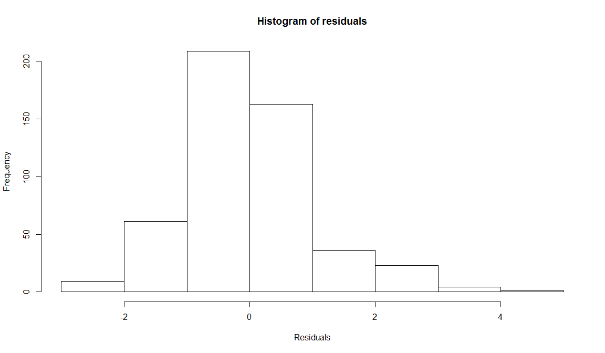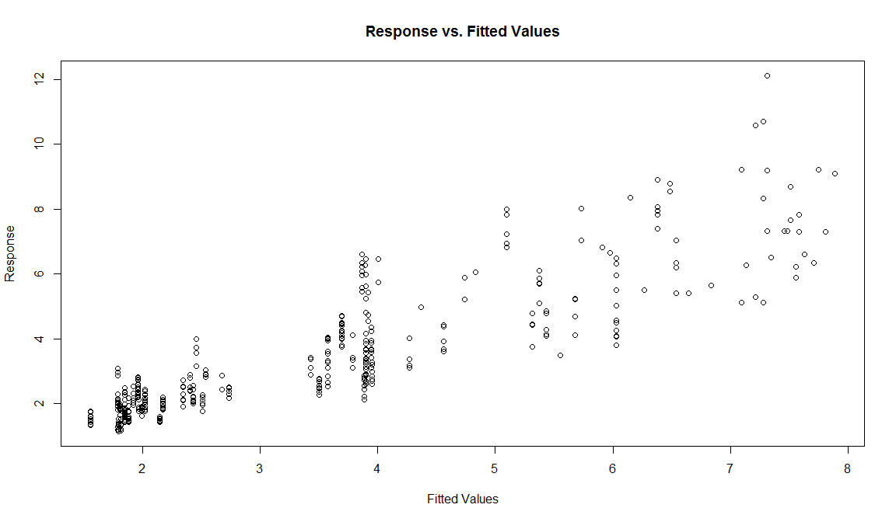
##
## Method: GCV Optimizer: magic
## Smoothing parameter selection converged after 7 iterations.
## The RMS GCV score gradient at convergence was 8.79622e-06 .
## The Hessian was positive definite.
## Model rank = 10 / 10
##
## Basis dimension (k) checking results. Low p-value (k-index<1) may
## indicate that k is too low, especially if edf is close to k'.
##
## k' edf k-index p-value
## s(nox) 9.00 8.43 0.4 <2e-16 ***
## ---
## Signif. codes: 0 '***' 0.001 '**' 0.01 '*' 0.05 '.' 0.1 ' ' 1